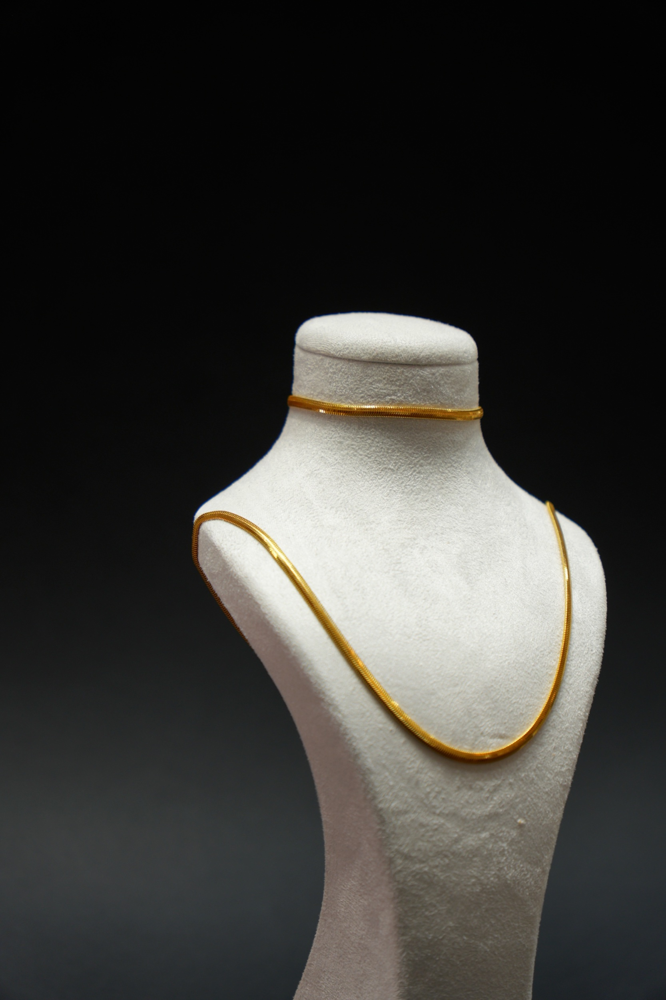
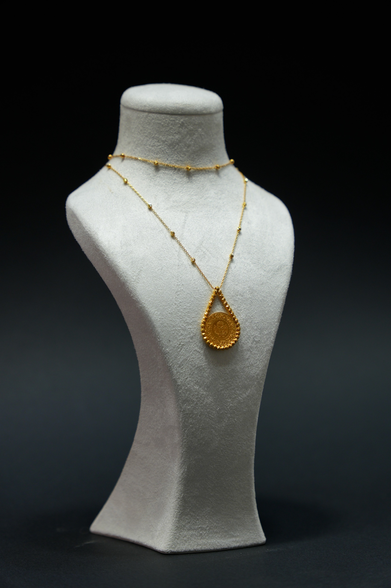
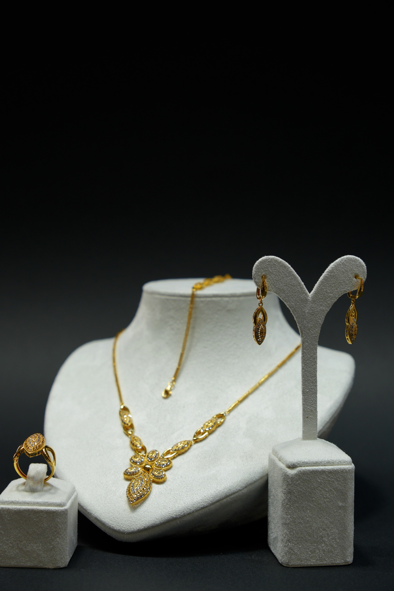
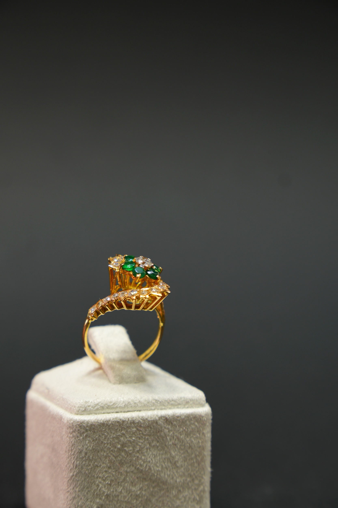
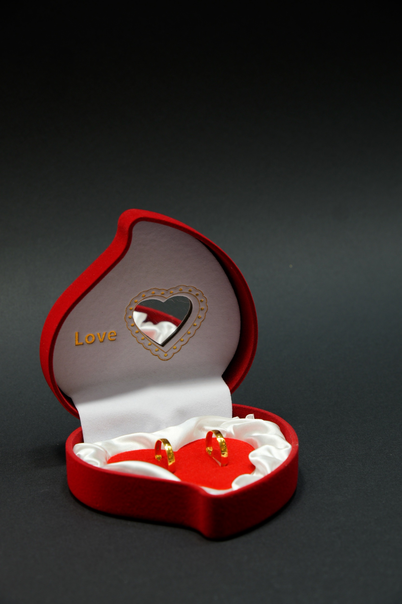

← Zurück zum Portfolio
Product &Jewelry
Produkte und Schmuck im besten Licht – detailreiche Fotografie für Online-Shops, Social Media und Werbung. Zu sehen ist eine Auswahl für Juwelier Prestij in Bonn: Ketten, Ringe und Anhänger, inszeniert mit präzisem Licht.
01 Fotografie
Visual Branding
Hochwertige Produktfotografie für Websites, Online-Shops und digitale Markenpräsenz – ästhetisch, aufmerksamkeitsstark und markenwirksam.
Kapitel 04 / 06 · Prestij · Bonn
Prestij – Product & Jewelry
Schmuck im Licht – vom Detail zum ganzen Stück.











